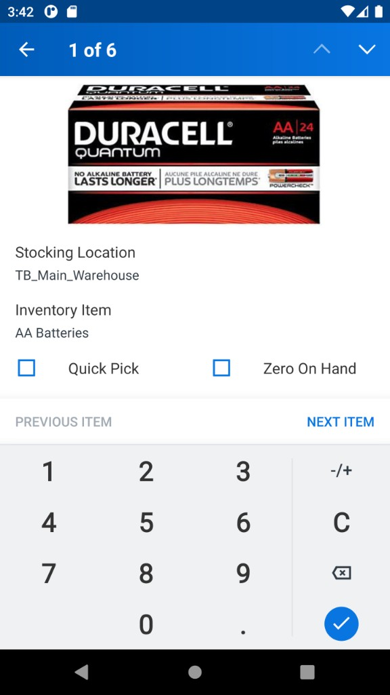
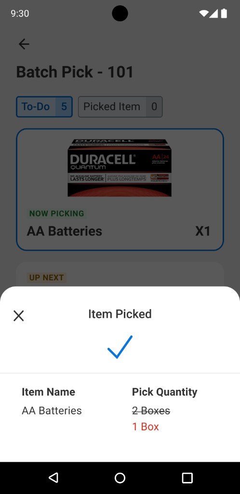
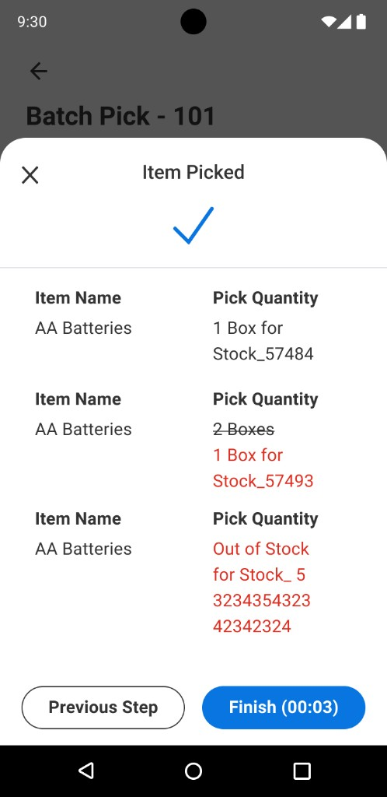

Inventory Stock Picking
High-volume warehouse teams were stuck in click-heavy mobile flows: low-density patterns, buried primaries, and scroll-tap loops that slowed picks on the floor.
Shipped in Workday (2023–2024): scanner-led single pick in production, then a React batch-pick path for multi-line work—plus design-system updates so dense mobile patterns could extend beyond the warehouse.
Owned mobile UX end to end: usability audit, two design iterations, shipped interaction model with engineering, usability testing, and design-system collaboration for high-density components.
Warehouse pickers were fighting the phone—wrong component density and buried actions on the floor. I led audit → two iterations, shipped scanner-led single pick (live), then a React batch-pick flow for multi-line work. Outcome: fewer taps, clearer “what now,” and design-system patterns that extended past the warehouse.
Owned mobile UX end-to-end: usability audit, IA and interaction for the scanner-led single-pick flow, batch pick UI (cards, sheets, tabs) with engineering, and design system updates for high-density patterns—used beyond the warehouse.
Too much tapping, not enough picking
High-volume warehouse teams were stuck in a click-heavy mobile flow: low-density components (meant for calmer UIs) wasted space, primary actions sat under banners and noise, and workers repeated scroll-tap loops instead of moving stock.
What the audit surfaced
- Hierarchy — oversized chrome made it unclear what to do next and what was already picked.
- Wrong density — padding and patterns built for slow admin tasks, not fast floor work.
- Buried actions — confirm / skip / move on lived under secondary detail, so every pick felt slower than it should.
Scan-first bets with PM and engineering
Working sessions with PM and engineering aligned on when scan should advance the task, what had to ship before peak season, and how batch UI could follow without destabilizing the live single-pick path workers already relied on.
From categorized lists to scanner-driven UX
We tried two directions in design—summarized in the callouts below. The single-pick screenshots that come next are not the legacy app; they are the live product from the second direction (scanner-led flow). Batch pick follows as a separate multi-line experience.
Denser list + grouping
Tighter list, smaller banner, items grouped by location. Still too much navigate-by-scroll; primary actions weren’t obvious.
Scanner-led, one item at a time
Now picking / up next, bin scan to advance, keypad to confirm quantity—fewer taps, attention on the current line. The screens below are this live path.
Shipped flow — iteration 2 in production
Site → task → lines → confirm quantity. Same pattern described in the green callout above; batch pick is covered in the next section.



Multi-line task, new React UI
Batch pick lets workers move through many lines in one run. New React mobile components—cards, To-Do / Picked, bottom sheets for scan and confirm—borrow from consumer pickup apps (Instacart-style): big product art, clear counts, one obvious next step.




Touch, glare, and one-handed reach
Targets, “now picking” focus, and bottom sheets were sized for gloved hands and one-handed reach on the floor—paired with engineering on contrast and motion so counts and locations stayed legible under warehouse lighting.
What we learned changed the ship order
Audit clips and usability rounds steered iteration 2 into production first; batch React UI shipped as a follow-on once the core pick loop stabilized, so we didn’t overload change management for frontline teams.
What changed
- Single pick: scanner-first flow, less navigation noise, faster quantity confirm
- Batch pick: React UI tuned for multi-line work—tabs, cards, sheets, clear primary actions
- Design system: high-density patterns extended to other product areas (e.g. financial flows)
What I’d repeat on the next mobile ops project
Density is the brief
Warehouse UX fails when components assume “office” pacing. Fixing density and hierarchy came before polish.
Let the scan drive the step
Single-pick got simpler when the UI followed bin scan → confirm, not endless list scrolling.
Batch = familiar commerce patterns
For multi-line picks, cards and sheets borrowed from consumer pickup apps so workers could parse work at a glance.
Engineering, early and often
Cards, sheets, and tabs were defined alongside mobile engineering so React components landed closer to final density, motion, and edge cases—not a handoff wallpaper exercise.
Design system ripple
High-density layouts and components drafted for warehouse work became the reference for other financial mobile flows that needed the same “fewer taps, more signal” discipline.
"Simplifying doesn't mean reducing — it means focusing on what drives action."